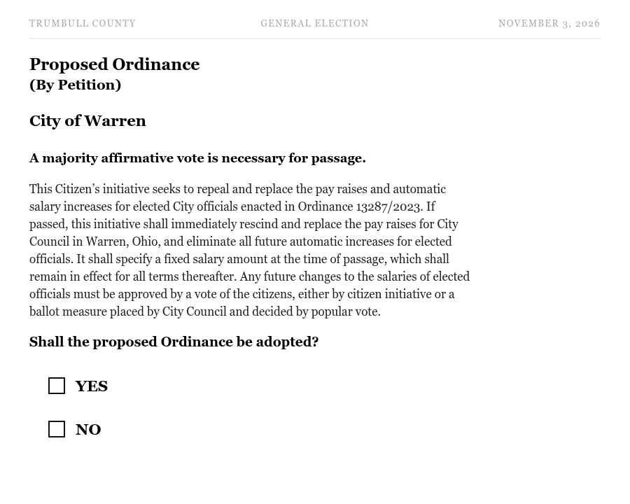

Ballot Summary & Full Text
A YES Vote = Repeal the Raises.
Warren City · General Election · Tuesday, November 3, 2026
Ballot Summary Full Ordinance Text Download Full Text (PDF) Email for a VOTE YES Yard Sign1. The Ballot Summary (What You Will See)
This is the abbreviated summary printed on the ballot for all Warren City voters:

Proposed Ordinance (By Petition) — City of Warren
A majority affirmative vote is necessary for passage.
This Citizen’s initiative seeks to repeal and replace the pay raises and automatic salary increases for elected City officials enacted in Ordinance 13287/2023. If passed, this initiative shall immediately rescind and replace the pay raises for City Council in Warren, Ohio, and eliminate all future automatic increases for elected officials. It shall specify a fixed salary amount at the time of passage, which shall remain in effect for all terms thereafter. Any future changes to the salaries of elected officials must be approved by a vote of the citizens, either by citizen initiative or a ballot measure placed by City Council and decided by popular vote.
Shall the proposed Ordinance be adopted? ☐ YES ☐ NO
2. The Full Ordinance Text
Transcribed from the original citizen petition (Ohio Form No. 6-I) filed with the Warren City Auditor. View the scanned original (PDF).
Title: This Citizen’s Initiative seeks to repeal and replace the excessive pay raises and automatic salary increases for elected city officials enacted in Ordinance 13287/2023. If passed, this initiative shall immediately rescind and replace the pay raises for City Council in Warren, Ohio, and eliminate all future automatic increases for elected officials. It shall specify a fixed salary amount at the time of passage, which shall remain in effect for all terms thereafter. Any future changes to the salaries of elected city officials must be approved by a vote of the citizens, either by citizen initiative or a ballot measure placed by City Council, and decided by popular vote.
Specify the Ordinance (if passed): As assigned by Clerk of Council upon passage.
WHEREAS, the City of Warren passed Ordinance 13287/2023 was duly passed and implemented; and
WHEREAS, the citizen’s deem it necessary to adjust and properly establish the ongoing method of the salaries of their elected officials, ie: Office of the mayor, City Auditor, Director of Law, City Treasurer, Council President, and members of Council of the City of Warren, Ohio going forward from the time of this ordinance’s passage.
BE IT ORDAINED by the citizens of the City of Warren, State of Ohio:
Section 1: That, effective upon passage and thereafter the Mayor of the City of Warren Ohio’s annual wages shall be set to value at that time and remain unchanged unless by ballot vote of the people.
Section 2: That, effective upon passage and thereafter the Director of Public Service and Safety of the City of Warren Ohio’s annual wages shall be set to value at the time of passage.
Section 3: That, effective upon passage and thereafter the Auditor of the City of Warren Ohio’s annual wages shall be set to value at that time and remain unchanged unless by ballot vote of the people.
Section 4: That, effective upon passage and thereafter the Deputy Auditor of the City of Warren Ohio’s annual wages shall be set to value at that time.
Section 5: That, effective upon passage and thereafter the Director of Law of the City of Warren Ohio’s annual wages shall be set to value at that time and remain unchanged unless by ballot vote of the people.
Section 6: That, effective upon passage and thereafter the Deputy Law Director of the City of Warren Ohio’s annual wages shall be set to value at that time.
Section 7: That, effective upon passage and thereafter the Treasurer of the City of Warren Ohio’s annual wages shall be set to value at that time and remain unchanged unless by ballot vote of the people.
Section 8: That, effective upon passage and thereafter the President and Members of Council of the City of Warren Ohio’s annual wages shall be frozen of any automatic increases after passage of this ordinance and set to $16,500 per year starting January 1st, 2026 and remain unchanged unless by ballot vote of the people.
Section 9: That the salaries and other compensation provided for within this ordinance shall be paid out of the Treasury of the City of Warren, Ohio in such equal installments as determined by the regular City payroll.
Section 10: Benefits or non-monetary salary/ annual wages for City of Warren elected officials and all others covered in 13287/2023 shall be set by appropriate ordinance and upon passage of this initiative shall receive and shall be entitled to receive, health care insurance coverage, health care insurance benefits, life insurance coverage, and life insurance benefits, in accordance with the benefits established in the City of Warren, Ohio’s “Policies and Procedures for Non-Bargaining Personnel.”
Section 11: Immediately upon passage of this Ordinance, Council shall be forbidden from making any changes to the salaries/ annual wages of any elected official or the provisions of this ordinance without the approval of a ballot vote of the residents of the City of Warren, Ohio. This provision only applies to City of Warren Elected Officials.
Scanned Original — Petition Pages 1 & 2
Remember at the Ballot Box:
YES repeals the raises. NO keeps the raises and the automatic increases.
Call or Text: 330-219-3564 Email for a VOTE YES Yard Sign Back to RepealTheRaises.org